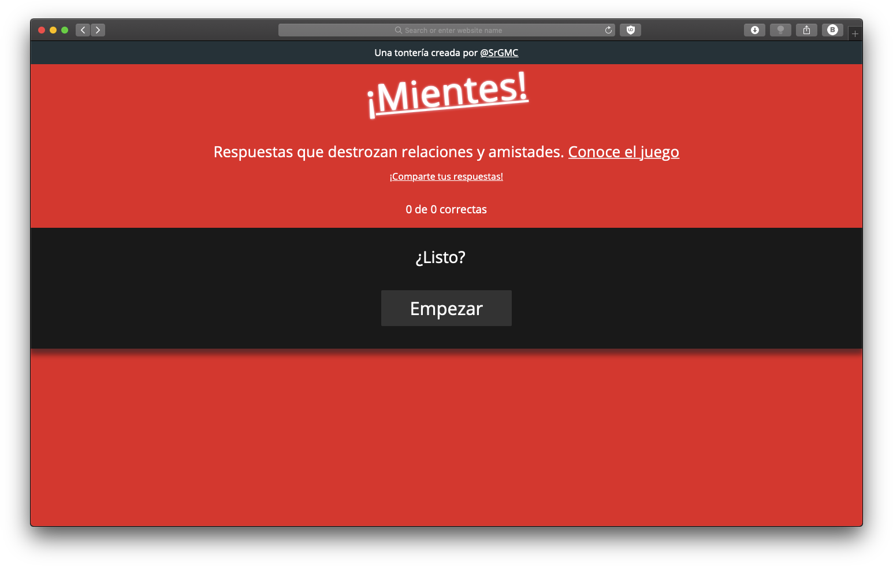
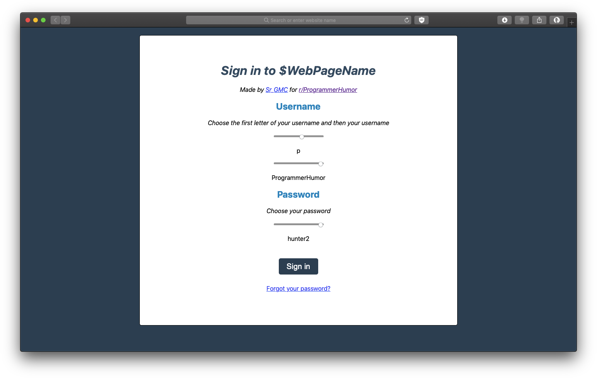
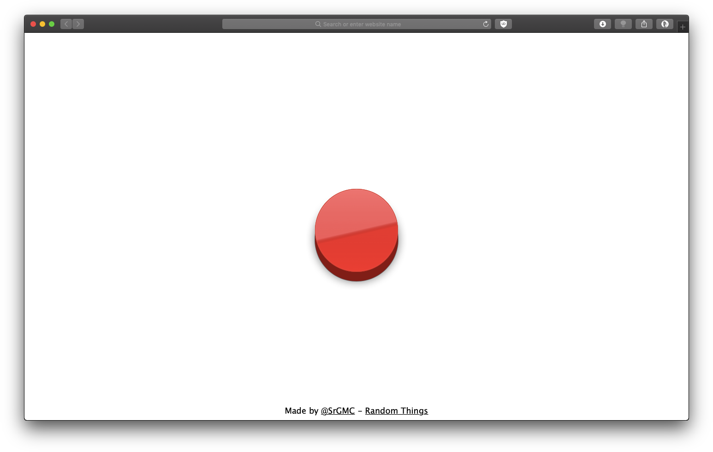
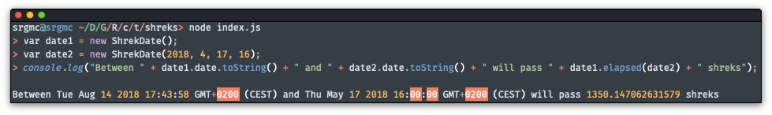

¡Mientes!
A game where you can destroy relationships and friendships. A user answers some questions (some are hot, some are not) and share them with their friends to test how well does one know them. In Spanish. Sign up does not work.
Shitty Login Prototype (submitted to r/ProgrammerHumor)
A prototype for a login webpage. It implements many things programmers should not do when managing a user database with passwords, such as hardcoding usernames and passwords, storing them in plain text or showing them while login in.
It was submitted to r/ProgrammerHumor on Reddit for an ongoing joke
Rick Roll Roulette
Want to risk your luck? Don't want to be rickrolled? Duel with friends to see who has the least luck in the world.
TimeToShreks
Facebook invented the flick, a new time unit. Why don't we create a new one too?
Meet a Shrek, a time unit based on the length of the original Shrek film. Available for all your JavaScript projects.